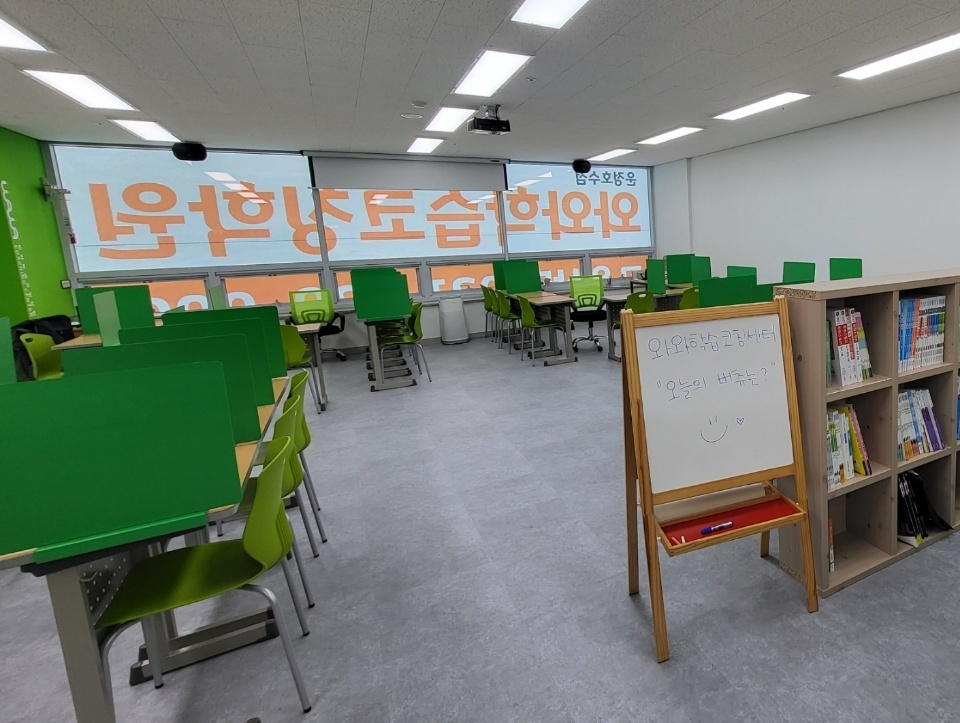
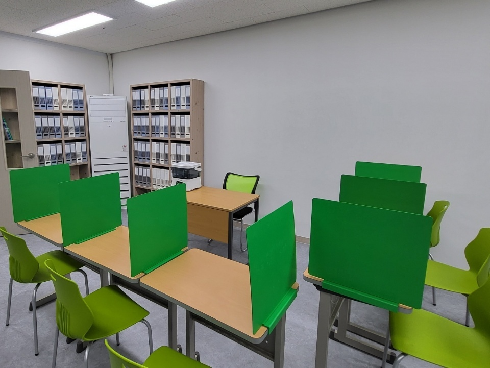
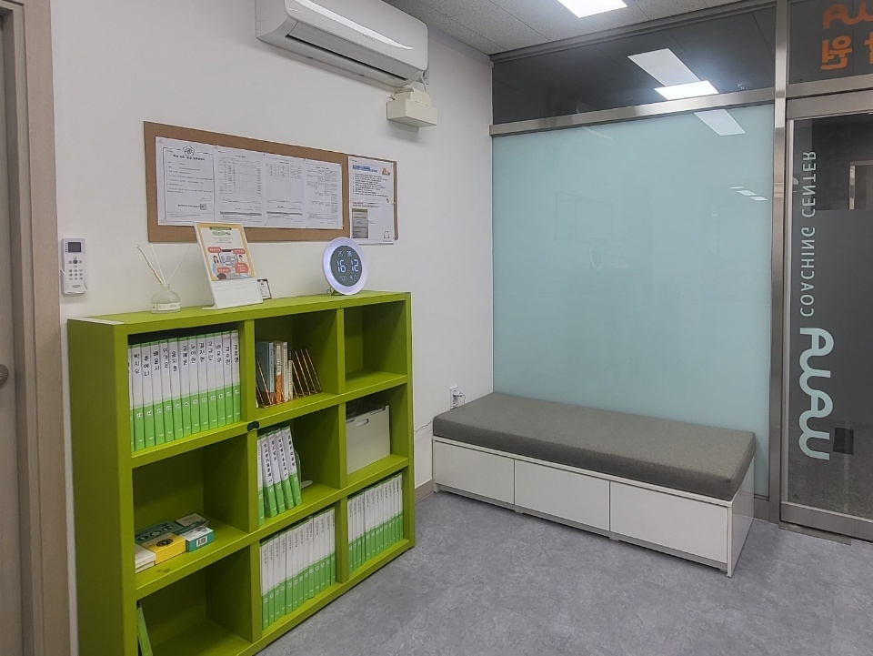

안녕하세요, 경기 파주시 와동동 운정신도시에 있는 와와학습코칭 운정호수점입니다. 지산초등학교(지산초)·파주와동초등학교(와동초)·한가람초등학교(한가람초) 아이들이 걸어서 오가는 자리에 있습니다.
오늘은 초등 학부모님들께서 상담에서 가장 자주 하시는 말씀에서 이야기를 시작해 보려 합니다. “우리 아이가 잘하고 있는 건지 아닌지를 모르겠어요.” 이 말씀은 걱정이 많으셔서 나오는 말이 아닙니다. 사실 그대로입니다. 초등학교에는 등수가 없기 때문입니다.
성적표를 펼쳐도 숫자가 없습니다
초등학교 통지표에는 석차도, 반 평균도, 100점 만점의 점수도 적히지 않습니다. 대신 ‘매우 잘함’, ‘잘함’ 같은 문장이 과목마다 적혀 나옵니다. 아이의 기를 꺾지 않고 배움 자체에 집중하게 하려는 취지이고, 저희도 그 취지에 동의합니다.
다만 부모님 입장에서는 참고할 눈금이 하나도 없는 상태로 6년이 흘러간다는 뜻이기도 합니다. 문장은 대체로 좋게 적혀 있고, 숙제도 해 가고, 학교도 즐겁게 다닙니다. 그래서 별문제가 없다고 여기게 됩니다. 그러다 숫자를 처음 마주하는 날이 옵니다.
숫자가 처음 나오는 날은 중학교에서 옵니다
중학교에 올라가면 상황이 달라집니다. 1학년은 자유학년·자유학기 운영으로 지필고사 부담이 적은 편이지만, 그 시기가 지나면 시험 점수가 숫자로 나오고 성취도 등급이 붙습니다. 학교마다 운영 방식이 달라 시점은 조금씩 차이가 있습니다.
이때 부모님들께서 가장 당황하시는 지점은 점수 자체가 아닙니다. “우리 아이가 이 정도인 줄 몰랐다”는 것입니다. 아이가 갑자기 못하게 된 것이 아닙니다. 몇 년 동안 조금씩 벌어져 온 차이가, 눈금이 생기는 순간 한꺼번에 눈에 보이는 것뿐입니다.
그래서 저희는 초등 시기에 점수를 대신할 다른 눈금을 보시라고 말씀드립니다. 학원에서 몇 문제를 맞혔는지 말고, 아래 세 가지입니다.
첫째, 혼자 앉아 있는 시간이 얼마나 되는가

위 사진은 저희 학습실입니다. 책상마다 초록색 칸막이를 세워 두었습니다. 아이들이 처음 오면 이 자리에서 20분을 채우지 못하는 경우가 흔합니다. 지우개를 찾고, 물을 마시러 나가고, 다 한 것 같아서 일어납니다.
이것은 집중력이 나쁜 아이의 문제가 아니라, 그런 시간을 가져 본 적이 없는 아이의 문제입니다. 초등 내내 ‘누가 옆에서 봐 줄 때만’ 공부를 해 왔다면, 혼자 앉는 일 자체가 처음 해 보는 일이 됩니다. 중학교 시험 공부는 그 혼자 앉는 시간 위에서만 가능합니다.
그래서 저희는 처음부터 한 시간을 요구하지 않습니다. 20분에서 시작해 30분, 40분으로 늘려 갑니다. 늘어나는 속도보다 매일 같은 자리에 앉는다는 사실이 중요합니다. 집에서라면 식탁 한쪽을 정해 두고 매일 같은 시각에 앉는 것부터 시작하실 수 있습니다.
둘째, 모르는 것을 모른다고 말하는가

초등 고학년으로 갈수록 아이들은 “모르겠어요”라는 말을 아낍니다. 물어보면 혼날 것 같고, 이미 배운 것을 모른다고 하면 창피하다고 느끼기 때문입니다. 그래서 아는 척하고 넘어가는 습관이 생깁니다.
이 습관이 무서운 이유는 티가 나지 않는다는 데 있습니다. 숙제는 답지를 보고라도 채워 오고, 수업 시간에는 고개를 끄덕입니다. 구멍은 그대로 남아 있는데 아무도 모르는 상태로 학년이 올라갑니다. 분수에서 막힌 아이가 비율에서 또 막히고, 비율에서 막힌 아이가 중학교 함수에서 또 막히는 식입니다.
그래서 저희는 아이가 “여기 모르겠어요”라고 말했을 때 그 말을 크게 반깁니다. 모른다고 말할 수 있는 아이는 고칠 수 있는 아이입니다. 집에서는 “오늘 어려웠던 거 하나만 말해 줘”처럼, 잘한 것이 아니라 어려웠던 것을 묻는 질문을 한 번씩 해 주시면 좋습니다.
셋째, 읽고 나서 무슨 말인지 아는가
앞의 교실 사진 오른쪽에 책장이 있습니다. 아이들이 기다리는 시간에 꺼내 볼 수 있도록 둔 것입니다. 초등에서 가장 조용히 벌어지는 차이가 여기에서 나옵니다.
중학교에 가면 문제의 길이가 눈에 띄게 길어집니다. 수학도 계산만 묻지 않고 상황을 문장으로 설명한 뒤 구하라고 합니다. 과학도 실험 과정을 읽고 답해야 합니다. 계산은 할 줄 아는데 문제가 무엇을 묻는지 몰라서 틀리는 일이 이때부터 늘어납니다.
확인하는 방법은 단순합니다. 아이가 읽은 글을 덮고 “무슨 얘기였어?”라고 물어보시면 됩니다. 줄거리를 두세 문장으로 말하지 못한다면, 읽기는 했지만 이해하지는 못한 것입니다. 이 확인은 어느 학년에서든 오늘 저녁에 바로 해 보실 수 있습니다.
운정호수점에서 하는 일
저희가 하는 일은 사실 특별하지 않습니다. 아이마다 오늘 할 분량을 함께 정하고, 정한 만큼 자리에서 해냈는지를 끝에 같이 확인합니다. 하다가 막힌 곳은 그 자리에서 짚고, 넘어간 흔적은 기록으로 남깁니다. 앞 사진의 책장에 파일이 종류별로 꽂혀 있는 것도 그 때문입니다.
초등 아이에게 성적을 만들어 드리겠다는 약속은 드리지 않습니다. 대신 중학교에 올라갔을 때 혼자 앉을 수 있는 아이, 모른다고 말할 수 있는 아이, 문제를 읽고 무슨 말인지 아는 아이로 보내 드리는 것을 목표로 합니다. 숫자가 처음 나오는 날에 당황하지 않으려면 그 세 가지가 먼저 있어야 하기 때문입니다.
상담에서 먼저 여쭙는 것
- 집에서 혼자 공부하는 시간이 하루에 얼마나 되나요? 학원에 앉아 있는 시간 말고, 아무도 안 볼 때의 시간을 여쭙습니다.
- 아이가 모르는 것을 물어보는 편인가요? 아이의 성격을 알기 위해서가 아니라, 구멍을 어디서 찾아야 할지 알기 위해서입니다.
- 지금 읽고 있는 책이 있나요? 없다고 하셔도 괜찮습니다. 어느 정도 길이의 글까지 편한지를 가늠하기 위해 여쭙습니다.
성적표를 가져오시지 않아도 됩니다. 초등 통지표에는 어차피 저희가 볼 숫자가 없습니다. 위 세 가지 답이 아이에 대해 훨씬 많은 것을 알려 줍니다.
경기 파주시 와동동 운정신도시에서 와와학습코칭 운정호수점이 아이들과 함께하고 있습니다. 지산초등학교·파주와동초등학교·한가람초등학교에 다니는 아이가 잘하고 있는 것인지 아닌지 가늠이 되지 않으신다면, 점수 대신 위의 세 가지를 한번 살펴봐 주시기 바랍니다.
※ 이 글의 사진은 와와학습코칭 운정호수점에서 촬영한 것으로, 촬영 시점과 현재 모습이 다를 수 있습니다. 개설 과목과 운영 시간, 수업 구성은 센터 사정에 따라 달라질 수 있으니 방문 전에 센터로 문의해 주시기 바랍니다. 인근 학교 목록은 센터 안내 자료를 기준으로 했으며, 실제 배정 학교는 거주지와 학년도에 따라 달라집니다. 초등 통지표 표기 방식과 중학교 자유학년·자유학기 운영, 지필평가 시행 시기는 학교와 학년도에 따라 다르므로 자세한 내용은 재학 중인 학교에 확인해 주시기 바랍니다. 본문의 학습 방법 설명은 일반적인 학습 지도 관점에서 정리한 것으로, 특정 학교의 시험 출제 방식이나 성적 향상을 보장하지 않습니다.